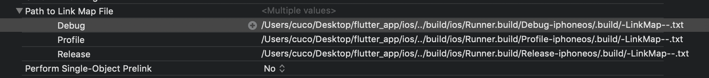
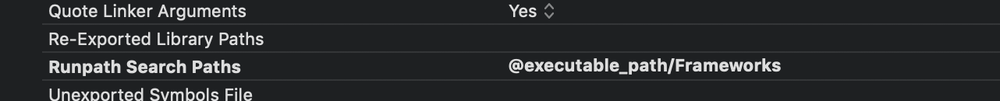

Flutter 在IOS上的启动流程¶
Flutter在IOS上使用的逻辑和Android很相似，App主要是提供初始化和View给FlutterEngine做为渲染，其他的还是FlutterEngine在处理后续的工作,App启动的时候是做了哪些工作，才能办FlutterUI界面加载出来？？
1.IOSApp包结构
2.FlutterEngine库是怎么加载的
3.FlutterEngine初始化过程
4.FlutterEngine启动过程
Ipa包结构¶
ios包中Flutter相关的资源文件是保存在Frameworks/App.framework/flutter_assets Bundle中，引擎相关的文件是保存在Frameworks/Flutter.framework在两个地方保存了Flutter相关的代码，在App结构中，我们看到了其实Flutter相关的代码在App中是相互分离的，没有多少相关连，FlutterEngine编译的时候回和App的代码整合在一起，方便启动的时候加载FlutterEngine(我们是否可以使用手动的方式来加载Flutter引擎库，这样就和ios的App更加独立)后续再来处理这个问题
flutter build ios --release
运行上面的命令，等待打包工具生成ios这些文件，结构如下，中间删除了一下图片，关注分析的重点。
➜ Runner.app tree -L 3 . ├── AppFrameworkInfo.plist ........ ├── Assets.car ├── Base.lproj │ ├── LaunchScreen.storyboardc │ │ ├── 01J-lp-oVM-view-Ze5-6b-2t3.nib │ │ ├── Info.plist │ │ └── UIViewController-01J-lp-oVM.nib │ └── Main.storyboardc │ ├── BYZ-38-t0r-view-8bC-Xf-vdC.nib │ ├── Info.plist │ └── UIViewController-BYZ-38-t0r.nib ├── Debug.xcconfig ├── App.framework │ ├── App │ ├── Info.plist │ ├── _CodeSignature │ │ └── CodeResources │ └── flutter_assets │ ├── AssetManifest.json │ ├── FontManifest.json │ ├── LICENSE │ ├── fonts │ ├── isolate_snapshot_data │ ├── kernel_blob.bin │ ├── packages │ └── vm_snapshot_data ├── Flutter.framework │ ├── Flutter │ ├── Info.plist │ ├── _CodeSignature │ │ └── CodeResources │ └── icudtl.dat ├── libswiftCore.dylib ├── libswiftCoreFoundation.dylib ├── libswiftCoreGraphics.dylib ├── libswiftDarwin.dylib ├── libswiftDispatch.dylib ├── libswiftFoundation.dylib └── libswiftObjectiveC.dylib ├── Info.plist ├── PkgInfo ├── Runner ├── _CodeSignature │ └── CodeResources └── embedded.mobileprovision
FlutterEngine库是怎么加载的¶
配置xcode开发环境¶
Code开启编译选项Write Link Map File XCode -> Project -> Build Settings -> 搜map -> 把Write Link Map File选项设为YES，并指定好linkMap的存储位置 特别提醒：打包发布前记得还原为NO 
配置这个选项可以让xcode在打包的时候说是framework目录下的Flutter库，
注意：没有在在Linked的设置里面设置的动态库，通过dlopen的形式来打开。如果动态库在Link Framwokrs and Libraries中设置了会在应用启动的时候就会被加载。
把动态库看成一个独立的没有main函数入口的可执行文件，在iOS打包中直接copy到应用程序.app目录下的Frameworks目录。既然是可执行文件那么内部编译连接过程已经完成了，要处理的连接也只有在加载的时候由操作系统的dyld自动load + link。

编译后，到编译目录里找到该txt文件，文件名和路径就是上述的Path to Link Map File位于
这个LinkMap里展示了整个可执行文件的全貌，列出了编译后的每一个.o目标文件的信息（包括静态链接库.a里的），以及每一个目标文件的代码段，数据段存储详情。
LinkMap结构
1.首先列出来的是目标文件列表(中括号内为文件编号)：
➜ Runner.build cat Runner-LinkMap-normal-arm64.txt # Path: /Users/cuco/Desktop/flutter_app/build/ios/Debug-iphoneos/Runner.app/Runner # Arch: arm64 # Object files: [ 0] linker synthesized [ 1] /Users/cuco/Desktop/flutter_app/build/ios/Runner.build/Debug-iphoneos/Runner.build/Objects-normal/arm64/GeneratedPluginRegistrant.o [ 2] /Users/cuco/Desktop/flutter_app/build/ios/Runner.build/Debug-iphoneos/Runner.build/Objects-normal/arm64/AppDelegate.o [ 3] /Users/cuco/Desktop/flutter_app/build/ios/Runner.build/Debug-iphoneos/Runner.build/Objects-normal/arm64/Runner_vers.o [ 4] /Applications/Xcode.app/Contents/Developer/Toolchains/XcodeDefault.xctoolchain/usr/lib/arc/libarclite_iphoneos.a(arclite.o) [ 5] /Applications/Xcode.app/Contents/Developer/Platforms/iPhoneOS.platform/Developer/SDKs/iPhoneOS13.0.sdk/System/Library/Frameworks//Foundation.framework/Foundation.tbd [ 6] /Applications/Xcode.app/Contents/Developer/Platforms/iPhoneOS.platform/Developer/SDKs/iPhoneOS13.0.sdk/usr/lib/libobjc.tbd [ 7] /Applications/Xcode.app/Contents/Developer/Platforms/iPhoneOS.platform/Developer/SDKs/iPhoneOS13.0.sdk/usr/lib/libSystem.tbd [ 8] /Applications/Xcode.app/Contents/Developer/Platforms/iPhoneOS.platform/Developer/SDKs/iPhoneOS13.0.sdk/System/Library/Frameworks//CoreFoundation.framework/CoreFoundation.tbd [ 9] /Applications/Xcode.app/Contents/Developer/Toolchains/XcodeDefault.xctoolchain/usr/lib/swift/iphoneos/libswiftCompatibilityDynamicReplacements.a(DynamicReplaceable.cpp.o) [ 10] /Applications/Xcode.app/Contents/Developer/Toolchains/XcodeDefault.xctoolchain/usr/lib/swift/iphoneos/libswiftCompatibility50.a(Overrides.cpp.o) [ 11] /Applications/Xcode.app/Contents/Developer/Platforms/iPhoneOS.platform/Developer/SDKs/iPhoneOS13.0.sdk/System/Library/Frameworks//UIKit.framework/UIKit.tbd [ 12] /Applications/Xcode.app/Contents/Developer/Platforms/iPhoneOS.platform/Developer/SDKs/iPhoneOS13.0.sdk/usr/lib/swift/libswiftObjectiveC.tbd [ 13] /Applications/Xcode.app/Contents/Developer/Platforms/iPhoneOS.platform/Developer/SDKs/iPhoneOS13.0.sdk/usr/lib/swift/libswiftFoundation.tbd [ 14] /Applications/Xcode.app/Contents/Developer/Platforms/iPhoneOS.platform/Developer/SDKs/iPhoneOS13.0.sdk/usr/lib/swift/libswiftCore.tbd
2.接着是一个段表，描述各个段在最后编译成的可执行文件中的偏移位置及大小，包括了代码段（__TEXT，保存程序代码段编译后的机器码）和数据段（__DATA，保存变量值）
首列是数据在文件的偏移位置，第二列是这一段占用大小，第三列是段类型，代码段和数据段，第四列是段名称。 每一行的数据都紧跟在上一行后面，如第二行__stubs的地址0x10304FD9C就是第一行__text的地址0x100005B00加上大小0x0304A29C，整个可执行文件大致数据分布就是这样。 这里可以清楚看到各种类型的数据在最终可执行文件里占的比例，例如__text表示编译后的程序执行语句，__data表示已初始化的全局变量和局部静态变量，__bss表示未初始化的全局变量和局部静态变量，__cstring表示代码里的字符串常量，等等。
# Sections: # Address Size Segment Section 0x10000473C 0x000028F0 __TEXT __text 0x10000702C 0x0000036C __TEXT __stubs 0x100007398 0x00000384 __TEXT __stub_helper 0x10000771C 0x00000043 __TEXT __objc_classname 0x10000775F 0x000001C8 __TEXT __objc_methname 0x100007927 0x00000028 __TEXT __objc_methtype 0x100007950 0x00000210 __TEXT __cstring 0x100007B60 0x0000026F __TEXT __const 0x100007DD0 0x0000008E __TEXT __swift5_typeref 0x100007E60 0x0000002C __TEXT __swift5_fieldmd 0x100007E8C 0x00000014 __TEXT __swift5_builtin 0x100007EA0 0x00000023 __TEXT __swift5_reflstr 0x100007EC4 0x00000030 __TEXT __swift5_assocty 0x100007EF4 0x00000018 __TEXT __swift5_proto 0x100007F0C 0x00000008 __TEXT __swift5_types 0x100007F14 0x000000E4 __TEXT __unwind_info 0x100008000 0x000000A0 __DATA __got 0x1000080A0 0x00000248 __DATA __la_symbol_ptr 0x1000082E8 0x000000E0 __DATA __const 0x1000083C8 0x00000010 __DATA __objc_classlist 0x1000083D8 0x00000008 __DATA __objc_nlclslist 0x1000083E0 0x00000008 __DATA __objc_protolist 0x1000083E8 0x00000008 __DATA __objc_imageinfo 0x1000083F0 0x00000270 __DATA __objc_const 0x100008660 0x000000B8 __DATA __objc_selrefs 0x100008718 0x00000008 __DATA __objc_protorefs 0x100008720 0x00000008 __DATA __objc_classrefs 0x100008728 0x00000100 __DATA __objc_data 0x100008828 0x00000115 __DATA __data 0x100008940 0x000000B8 __DATA __swift_hooks 0x100008A00 0x000004A0 __DATA __bss
3.接着就是按上表顺序，列出具体的按每个文件列出每个对应字段的位置和占用空间
同样首列是数据在文件的偏移地址，第二列是占用大小，第三列是所属文件序号，对应上述Object files列表，最后是名字。
# Symbols: # Address Size File Name 0x10000473C 0x00000040 [ 1] +[GeneratedPluginRegistrant registerWithRegistry:] 0x10000477C 0x00000204 [ 2] _$s6Runner11AppDelegateC11application_29didFinishLaunchingWithOptionsSbSo13UIApplicationC_SDySo0j6LaunchI3KeyaypGSgtF 0x100004980 0x00000064 [ 2] _$s6Runner11AppDelegateCMa 0x1000049E4 0x00000094 [ 2] _$sSo29UIApplicationLaunchOptionsKeyaMa 0x100004A78 0x00000070 [ 2] _$sSo29UIApplicationLaunchOptionsKeyaABSHSCWl 0x100004AE8 0x0000012C [ 2] _$s6Runner11AppDelegateC11application_29didFinishLaunchingWithOptionsSbSo13UIApplicationC_SDySo0j6LaunchI3KeyaypGSgtFTo 0x100004C14 0x00000030 [ 2] _$s6Runner11AppDelegateCACycfC 0x100004C44 0x00000098 [ 2] _$s6Runner11AppDelegateCACycfc 0x100004CDC 0x0000002C [ 2] _$s6Runner11AppDelegateCACycfcTo 0x100004D08 0x00000070 [ 2] _$s6Runner11AppDelegateCfD 0x100004D78 0x00000070 [ 2] _main 0x100004DE8 0x00000058 [ 2] _$sSo29UIApplicationLaunchOptionsKeya8rawValueSSvg 0x100004E40 0x00000070 [ 2] _$sSo29UIApplicationLaunchOptionsKeya8rawValueABSS_tcfC
.......................
4.已废弃&多余重复的字段
# Dead Stripped Symbols: # Size File Name <<dead>> 0x00000016 [ 2] literal string: registerWithRegistry: <<dead>> 0x00000005 [ 4] literal string: init <<dead>> 0x00000058 [ 9] _swift_getFunctionReplacement50 <<dead>> 0x00000048 [ 9] _swift_getOrigOfReplaceable50 <<dead>> 0x00000007 [ 0] literal string: __TEXT <<dead>> 0x00000000 [ 7] _pthread_getspecific <<dead>> 0x00000000 [ 7] _pthread_setspecific <<dead>> 0x00000000 [ 14] _swift_getFunctionReplacement <<dead>> 0x00000000 [ 14] _swift_getOrigOfReplacea
通过上面两步的配置，我们可以看到在生成的Runner.app中可以生产的可执行文件的中间文件，这里具体分析挣mach-O的结构，只是找到整个Flutter的加载入口，和前面的思想是一样的，先把各个入口和关键点搞定，避免停了在概念阶段，先搞请求整个Flutter框架在Ios上是怎么运行起来的，我们在聚焦在某个点上专题分析
Flutter 库加载过程(mach-o文件分析)¶
在上面的配置中，已经配置了app在启动时，自动加载链接Flutter库，如何进入IOSApp正常启动流程，启动流程的分析网上太多了，不做具体的分析，在App启动是会加载，在App启动完成之后，会调用AppDelegate中的didFinishLaunchingWithOptions参数的方法，开始初始化Flutter相关的逻辑，其他App初始化的逻辑没有改变。
初始化FlutterAppDelegate¶
在App启动完成只用，就开始初始化开发者的代码，入口是在AppDelegate类，AppDelegate继承了FlutterAppDelegate紧接着我们开始初始化,FlutterEngine和IOS平台相关的源码放在flutter/shell/platform/darwin/ios目录下
import UIKit import Flutter @UIApplicationMain @objc class AppDelegate: FlutterAppDelegate { override func application( _ application: UIApplication, didFinishLaunchingWithOptions launchOptions: [UIApplication.LaunchOptionsKey: Any]? ) -> Bool { GeneratedPluginRegistrant.register(with: self) return super.application(application, didFinishLaunchingWithOptions: launchOptions) } }
FlutterAppDelegate的实现了在Engine源码目录下/engine/src/flutter/shell/platform/darwin/ios/framework/Source/FlutterAppDelegate.mm，FlutterAppDelegate继承:
FlutterUI是直接显示在一个UIView上面(目前所有的FlutterUI相关的逻辑全部显示的是在这个UIView上面),IOS在FlutterUI显示的时候很显然，需要把相关的事件分发到FlutterUI成进行处理，FlutterUI和App直接的通信自然是通过FlutterPlugin插件来进行通信,FlutterPlugin插件包括系统插件和用户自定义的Channel，同时FlutterEngine的所有操作还是需要和App保存同步，如果App退到后台，FlutterEngine要需要处理自己的生命周期。
FLUTTER_EXPORT @interface FlutterAppDelegate : UIResponder <UIApplicationDelegate, FlutterPluginRegistry, FlutterAppLifeCycleProvider>
FlutterAppDelegate的实现类/engine/src/flutter/shell/platform/darwin/ios/framework/Source/FlutterAppDelegate.mm，在FlutterAppDelegate实例化时会调用init方法,先调用父类方法，如果初始化成功，则初始化FlutterPluginAppLifeCycleDelegate在FlutterEngine和app一个生命周期、和注册的插件管理工作。在FlutterPluginAppLifeCycleDelegate的初始化方法中init中初始化Flutter文件相关的查找目录
- (instancetype)init { if (self = [super init]) { _lifeCycleDelegate = [[FlutterPluginAppLifeCycleDelegate alloc] init]; } return self; }
FlutterPluginAppLifeCycleDelegate¶
在/Users/cuco/engine/src/flutter/shell/platform/darwin/ios/framework/Source/FlutterPluginAppLifeCycleDelegate.mm初始化是调用init实例方法进行初始化,初始化的过程中主要是获取缓存目录，在后续加载flutter的镜像文件和数据文件已经配置文件夹设置好路径。
///缓存目录 static const char* kCallbackCacheSubDir = "Library/Caches/"; - (instancetype)init { if (self = [super init]) { std::string cachePath = fml::paths::JoinPaths({getenv("HOME"), kCallbackCacheSubDir}); [FlutterCallbackCache setCachePath:[NSString stringWithUTF8String:cachePath.c_str()]]; _pluginDelegates = [[NSPointerArray weakObjectsPointerArray] retain]; } return self; }
FlutterCallbackCache¶
DartCallbackCache 文件路径相关的类：flutter/lib/ui/plugins/callback_cache.h
下面的代码就是一个文件加载目录初始化的操作，基础知识
+ (void)setCachePath:(NSString*)path { assert(path != nil); blink::DartCallbackCache::SetCachePath([path UTF8String]); NSString* cache_path = [NSString stringWithUTF8String:blink::DartCallbackCache::GetCachePath().c_str()]; // Set the "Do Not Backup" flag to ensure that the cache isn't moved off disk in // low-memory situations. if (![[NSFileManager defaultManager] fileExistsAtPath:cache_path]) { [[NSFileManager defaultManager] createFileAtPath:cache_path contents:nil attributes:nil]; NSError* error = nil; NSURL* URL = [NSURL fileURLWithPath:cache_path]; BOOL success = [URL setResourceValue:[NSNumber numberWithBool:YES] forKey:NSURLIsExcludedFromBackupKey error:&error]; if (!success) { NSLog(@"Error excluding %@ from backup %@", [URL lastPathComponent], error); } } } @end
FlutterPluginRegistry插件初始化过程¶
FlutterPluginRegistry 的实现代码是在FlutterAppDelegate.mm中实现的,具体的参考实现过程请参考一下代码
- (NSObject<FlutterPluginRegistrar>*)registrarForPlugin:(NSString*)pluginKey { UIViewController* rootViewController = _window.rootViewController; if ([rootViewController isKindOfClass:[FlutterViewController class]]) { return [[(FlutterViewController*)rootViewController pluginRegistry] registrarForPlugin:pluginKey]; } return nil; } - (BOOL)hasPlugin:(NSString*)pluginKey { UIViewController* rootViewController = _window.rootViewController; if ([rootViewController isKindOfClass:[FlutterViewController class]]) { return [[(FlutterViewController*)rootViewController pluginRegistry] hasPlugin:pluginKey]; } return false; } - (NSObject*)valuePublishedByPlugin:(NSString*)pluginKey { UIViewController* rootViewController = _window.rootViewController; if ([rootViewController isKindOfClass:[FlutterViewController class]]) { return [[(FlutterViewController*)rootViewController pluginRegistry] valuePublishedByPlugin:pluginKey]; } return nil; }
FlutterAppDelegate初始化过程主要做了:
1.加载相关的插件信息
2.初始化缓存目录
3.绑定FlutterEngine引擎和App的生命周期
4.在App的不同生命周期中调用FlutterEngine进行通信
主要是在做全局信息的初始化操作
FlutterViewController 初始化过程¶
FlutterEngine初始化过程主要是在FlutterViewController中进行UI事件的绑定工作，在相关的生命周期中初始化逻辑，我们先分析关键点，后续的文章在对每一个点进行细致的分享，所有的操作都是在FlutterViewController的上面周期方法进行调用的
flutter/shell/platform/darwin/ios/framework/Source/FlutterEngine.mm主要实现了App层和FlutterEngine的一个入口控制逻辑
flutter/shell/platform/darwin/ios/framework/Source/FlutterView.mm继承UIView提供个FlutterEngine引擎进行绘制操作
NotificationCenterFlutterEngine和App进行交互的通知通道
1.- init： 初始化FlutterEngine、FlutterView、setupNotificationCenterObservers注册 2. awakeFromNib： 3. loadView： FlutterView赋值给ViewController的view对象，初始化启动屏 4. viewDidLoad： 5. viewWillAppear： launchEngine、注册生命周期 6. updateViewConstraints： 7. viewWillLayoutSubviews： 8. viewDidLayoutSubviews： 设置UI屏幕的大小、UIScreen mainScreen 9. viewDidAppear： 更新Local信息、更新用户设置、更新访问状态 10. viewWillDisappear： 11. viewDidDisappear： 更新相关的FlutterUI
在iosAPP启动的时候，并没有做太多的操作，主要是初始化加载数据的路径，监听IOSApp生命周期，并且注册一些事件回调逻辑，接下来时App已经初始化完成，接着初始化FlutterViewController,在FlutterViewController初始化时，了init方法
flutter/shell/platform/darwin/ios/framework/Source/FlutterViewController.mm,在FlutterViewController初始化是调用初始化函数init
- (instancetype)init { return [self initWithProject:nil nibName:nil bundle:nil]; }
FlutterViewController 初始化入口¶
1.开始初始化整个FlutterEngine框架initWithProject，保存FlutterViewController到一个弱引用中，开始初始化FlutterEngine,调用initWithName方法进行初始化
2.初始化FlutterView主要是IOSUI交互的接口，主要作用是FlutterEngine和IOSUI的一个管理逻辑类,提供给FlutterEngine进行绘制处理
3.启动SplashScreenView
- createShell:FlutterEngine和不同平台直接的统一接口
6.performCommonViewControllerInitialization
7.setupNotificationCenterObservers
- (instancetype)initWithProject:(FlutterDartProject*)projectOrNil nibName:(NSString*)nibNameOrNil bundle:(NSBundle*)nibBundleOrNil { self = [super initWithNibName:nibNameOrNil bundle:nibBundleOrNil]; if (self) { _viewOpaque = YES; _weakFactory = std::make_unique<fml::WeakPtrFactory<FlutterViewController>>(self); _engine.reset([[FlutterEngine alloc] initWithName:@"io.flutter" project:projectOrNil allowHeadlessExecution:NO]); _flutterView.reset([[FlutterView alloc] initWithDelegate:_engine opaque:self.isViewOpaque]); [_engine.get() createShell:nil libraryURI:nil]; _engineNeedsLaunch = YES; [self loadDefaultSplashScreenView]; [self performCommonViewControllerInitialization]; } return self; }
FlutterEngine¶
在FlutterEngine初始化是，主要是查找到相关的资源录用，四个线程、消息队列进行初始化操作，主要是FlutterEngine内部进行初始化，并没有正在加载太作的业务代码逻辑
1.FlutterDartProject:主要初始化整个FlutterEngine初始化过程中Flutter_asset相关的文件路径解析，同时解析命令行参数，构建默认的进程参数
2.FlutterPlatformViewsController:主要的功能是处理FlutterEngine侧的View相关的逻辑flutter/shell/platform/darwin/ios/framework/Source/FlutterPlatformViews.mm
3.FlutterView
3.setupChannels
- (instancetype)initWithName:(NSString*)labelPrefix project:(FlutterDartProject*)projectOrNil allowHeadlessExecution:(BOOL)allowHeadlessExecution { self = [super init]; NSAssert(self, @"Super init cannot be nil"); NSAssert(labelPrefix, @"labelPrefix is required"); _allowHeadlessExecution = allowHeadlessExecution; _labelPrefix = [labelPrefix copy]; _weakFactory = std::make_unique<fml::WeakPtrFactory<FlutterEngine>>(self); if (projectOrNil == nil) _dartProject.reset([[FlutterDartProject alloc] init]); else _dartProject.reset([projectOrNil retain]); _pluginPublications = [NSMutableDictionary new]; _platformViewsController.reset(new shell::FlutterPlatformViewsController()); [self setupChannels]; return self; }
FlutterDartProject¶
- (instancetype)initWithPrecompiledDartBundle:(NSBundle*)bundle { self = [super init]; if (self) { _precompiledDartBundle.reset([bundle retain]); _settings = DefaultSettingsForProcess(bundle); } return self; } 查找的路径Frameworks/App.framework/flutter_assets + (NSString*)flutterAssetsName:(NSBundle*)bundle { NSString* flutterAssetsName = [bundle objectForInfoDictionaryKey:@"FLTAssetsPath"]; if (flutterAssetsName == nil) { flutterAssetsName = @"Frameworks/App.framework/flutter_assets"; } return flutterAssetsName; }
DefaultSettingsForProcess¶
设置Flutter_asset加载路径，设置FlutterEngine在这些过程中，如何查找可执行的文件路径，在上面的App的包结构中，我们可以看到，Flutter相关的资源文件，那么在FlutterEngine启动的时候，我们就可以加载相关的Flutter代码和相关资源文件路径
static blink::Settings DefaultSettingsForProcess(NSBundle* bundle = nil) { auto command_line = shell::CommandLineFromNSProcessInfo(); // Precedence: // 1. Settings from the specified NSBundle. // 2. Settings passed explicitly via command-line arguments. // 3. Settings from the NSBundle with the default bundle ID. // 4. Settings from the main NSBundle and default values. NSBundle* mainBundle = [NSBundle mainBundle]; NSBundle* engineBundle = [NSBundle bundleForClass:[FlutterViewController class]]; bool hasExplicitBundle = bundle != nil; if (bundle == nil) { bundle = [NSBundle bundleWithIdentifier:[FlutterDartProject defaultBundleIdentifier]]; } if (bundle == nil) { bundle = mainBundle; } auto settings = shell::SettingsFromCommandLine(command_line); settings.task_observer_add = [](intptr_t key, fml::closure callback) { fml::MessageLoop::GetCurrent().AddTaskObserver(key, std::move(callback)); }; settings.task_observer_remove = [](intptr_t key) { fml::MessageLoop::GetCurrent().RemoveTaskObserver(key); }; // The command line arguments may not always be complete. If they aren't, attempt to fill in // defaults. // Flutter ships the ICU data file in the the bundle of the engine. Look for it there. if (settings.icu_data_path.size() == 0) { NSString* icuDataPath = [engineBundle pathForResource:@"icudtl" ofType:@"dat"]; if (icuDataPath.length > 0) { settings.icu_data_path = icuDataPath.UTF8String; } } if (blink::DartVM::IsRunningPrecompiledCode()) { if (hasExplicitBundle) { NSString* executablePath = bundle.executablePath; if ([[NSFileManager defaultManager] fileExistsAtPath:executablePath]) { settings.application_library_path = executablePath.UTF8String; } } // No application bundle specified. Try a known location from the main bundle's Info.plist. if (settings.application_library_path.size() == 0) { NSString* libraryName = [mainBundle objectForInfoDictionaryKey:@"FLTLibraryPath"]; NSString* libraryPath = [mainBundle pathForResource:libraryName ofType:@""]; if (libraryPath.length > 0) { NSString* executablePath = [NSBundle bundleWithPath:libraryPath].executablePath; if (executablePath.length > 0) { settings.application_library_path = executablePath.UTF8String; } } } // In case the application bundle is still not specified, look for the App.framework in the // Frameworks directory. if (settings.application_library_path.size() == 0) { NSString* applicationFrameworkPath = [mainBundle pathForResource:@"Frameworks/App.framework" ofType:@""]; if (applicationFrameworkPath.length > 0) { NSString* executablePath = [NSBundle bundleWithPath:applicationFrameworkPath].executablePath; if (executablePath.length > 0) { settings.application_library_path = executablePath.UTF8String; } } } } // Checks to see if the flutter assets directory is already present. if (settings.assets_path.size() == 0) { NSString* assetsName = [FlutterDartProject flutterAssetsName:bundle]; NSString* assetsPath = [bundle pathForResource:assetsName ofType:@""]; if (assetsPath.length == 0) { assetsPath = [mainBundle pathForResource:assetsName ofType:@""]; } if (assetsPath.length == 0) { NSLog(@"Failed to find assets path for \"%@\"", assetsName); } else { settings.assets_path = assetsPath.UTF8String; // Check if there is an application kernel snapshot in the assets directory we could // potentially use. Looking for the snapshot makes sense only if we have a VM that can use // it. if (!blink::DartVM::IsRunningPrecompiledCode()) { NSURL* applicationKernelSnapshotURL = [NSURL URLWithString:@(kApplicationKernelSnapshotFileName) relativeToURL:[NSURL fileURLWithPath:assetsPath]]; if ([[NSFileManager defaultManager] fileExistsAtPath:applicationKernelSnapshotURL.path]) { settings.application_kernel_asset = applicationKernelSnapshotURL.path.UTF8String; } else { NSLog(@"Failed to find snapshot: %@", applicationKernelSnapshotURL.path); } } } } #if FLUTTER_RUNTIME_MODE == FLUTTER_RUNTIME_MODE_DEBUG // There are no ownership concerns here as all mappings are owned by the // embedder and not the engine. auto make_mapping_callback = [](const uint8_t* mapping, size_t size) { return [mapping, size]() { return std::make_unique<fml::NonOwnedMapping>(mapping, size); }; }; settings.dart_library_sources_kernel = make_mapping_callback(kPlatformStrongDill, kPlatformStrongDillSize); #endif // FLUTTER_RUNTIME_MODE == FLUTTER_RUNTIME_MODE_DEBUG return settings; }
setupNotificationCenterObservers¶
- (void)setupNotificationCenterObservers { NSNotificationCenter* center = [NSNotificationCenter defaultCenter]; [center addObserver:self selector:@selector(onOrientationPreferencesUpdated:) name:@(shell::kOrientationUpdateNotificationName) object:nil]; [center addObserver:self selector:@selector(onPreferredStatusBarStyleUpdated:) name:@(shell::kOverlayStyleUpdateNotificationName) object:nil]; [center addObserver:self selector:@selector(applicationBecameActive:) name:UIApplicationDidBecomeActiveNotification object:nil]; [center addObserver:self selector:@selector(applicationWillResignActive:) name:UIApplicationWillResignActiveNotification object:nil]; [center addObserver:self selector:@selector(applicationDidEnterBackground:) name:UIApplicationDidEnterBackgroundNotification object:nil]; [center addObserver:self selector:@selector(applicationWillEnterForeground:) name:UIApplicationWillEnterForegroundNotification object:nil]; [center addObserver:self selector:@selector(keyboardWillChangeFrame:) name:UIKeyboardWillChangeFrameNotification object:nil]; [center addObserver:self selector:@selector(keyboardWillBeHidden:) name:UIKeyboardWillHideNotification object:nil]; [center addObserver:self selector:@selector(onLocaleUpdated:) name:NSCurrentLocaleDidChangeNotification object:nil]; [center addObserver:self selector:@selector(onAccessibilityStatusChanged:) name:UIAccessibilityVoiceOverStatusChanged object:nil]; [center addObserver:self selector:@selector(onAccessibilityStatusChanged:) name:UIAccessibilitySwitchControlStatusDidChangeNotification object:nil]; [center addObserver:self selector:@selector(onAccessibilityStatusChanged:) name:UIAccessibilitySpeakScreenStatusDidChangeNotification object:nil]; [center addObserver:self selector:@selector(onAccessibilityStatusChanged:) name:UIAccessibilityInvertColorsStatusDidChangeNotification object:nil]; [center addObserver:self selector:@selector(onAccessibilityStatusChanged:) name:UIAccessibilityReduceMotionStatusDidChangeNotification object:nil]; [center addObserver:self selector:@selector(onAccessibilityStatusChanged:) name:UIAccessibilityBoldTextStatusDidChangeNotification object:nil]; [center addObserver:self selector:@selector(onMemoryWarning:) name:UIApplicationDidReceiveMemoryWarningNotification object:nil]; [center addObserver:self selector:@selector(onUserSettingsChanged:) name:UIContentSizeCategoryDidChangeNotification object:nil]; }
setupChannels¶
engine/src/flutter/shell/platform/darwin/ios/framework/Source/FlutterEngine.mm中注册FlutterUI层和IOS层之间的Plugin，这些Plugin是系统级别的
- (void)setupChannels { _localizationChannel.reset([[FlutterMethodChannel alloc] initWithName:@"flutter/localization" binaryMessenger:self codec:[FlutterJSONMethodCodec sharedInstance]]); _navigationChannel.reset([[FlutterMethodChannel alloc] initWithName:@"flutter/navigation" binaryMessenger:self codec:[FlutterJSONMethodCodec sharedInstance]]); _platformChannel.reset([[FlutterMethodChannel alloc] initWithName:@"flutter/platform" binaryMessenger:self codec:[FlutterJSONMethodCodec sharedInstance]]); _platformViewsChannel.reset([[FlutterMethodChannel alloc] initWithName:@"flutter/platform_views" binaryMessenger:self codec:[FlutterStandardMethodCodec sharedInstance]]); _textInputChannel.reset([[FlutterMethodChannel alloc] initWithName:@"flutter/textinput" binaryMessenger:self codec:[FlutterJSONMethodCodec sharedInstance]]); _lifecycleChannel.reset([[FlutterBasicMessageChannel alloc] initWithName:@"flutter/lifecycle" binaryMessenger:self codec:[FlutterStringCodec sharedInstance]]); _systemChannel.reset([[FlutterBasicMessageChannel alloc] initWithName:@"flutter/system" binaryMessenger:self codec:[FlutterJSONMessageCodec sharedInstance]]); _settingsChannel.reset([[FlutterBasicMessageChannel alloc] initWithName:@"flutter/settings" binaryMessenger:self codec:[FlutterJSONMessageCodec sharedInstance]]); _textInputPlugin.reset([[FlutterTextInputPlugin alloc] init]); _textInputPlugin.get().textInputDelegate = self; _platformPlugin.reset([[FlutterPlatformPlugin alloc] initWithEngine:[self getWeakPtr]]); }
FlutterViewcontroller和FlutterEngine.mm实例进行绑定¶
- (void)setViewController:(FlutterViewController*)viewController { FML_DCHECK(self.iosPlatformView); _viewController = [viewController getWeakPtr]; self.iosPlatformView->SetOwnerViewController(_viewController); [self maybeSetupPlatformViewChannels]; }
FlutterView¶
接着回到flutter/shell/platform/darwin/ios/framework/Source/FlutterViewController.mm的initWithProject继续往下分析,初始化flutter/shell/platform/darwin/ios/framework/Source/FlutterView.mm可说初始化Frame
- (instancetype)initWithDelegate:(id<FlutterViewEngineDelegate>)delegate opaque:(BOOL)opaque { FML_DCHECK(delegate) << "Delegate must not be nil."; self = [super initWithFrame:CGRectNull]; if (self) { _delegate = delegate; self.layer.opaque = opaque; } return self; }
FlutterEngine: createShell¶
这个方法在Android启动流程中有详细介绍过,这里不做更加详细的说明
1.初始化FlutterDart层的main()函数作为入口点
2.创建栅格化类Rasterizer
3.启动消息队列MessageLoop
4.创建platform、gpu、ui、io
- (BOOL)createShell:(NSString*)entrypoint libraryURI:(NSString*)libraryURI { if (_shell != nullptr) { FML_LOG(WARNING) << "This FlutterEngine was already invoked."; return NO; } static size_t shellCount = 1; auto settings = [_dartProject.get() settings]; if (libraryURI) { FML_DCHECK(entrypoint) << "Must specify entrypoint if specifying library"; settings.advisory_script_entrypoint = entrypoint.UTF8String; settings.advisory_script_uri = libraryURI.UTF8String; } else if (entrypoint) { settings.advisory_script_entrypoint = entrypoint.UTF8String; settings.advisory_script_uri = std::string("main.dart"); } else { settings.advisory_script_entrypoint = std::string("main"); settings.advisory_script_uri = std::string("main.dart"); } const auto threadLabel = [NSString stringWithFormat:@"%@.%zu", _labelPrefix, shellCount++]; FML_DLOG(INFO) << "Creating threadHost for " << threadLabel.UTF8String; // The current thread will be used as the platform thread. Ensure that the message loop is // initialized. fml::MessageLoop::EnsureInitializedForCurrentThread(); _threadHost = { threadLabel.UTF8String, // label shell::ThreadHost::Type::UI | shell::ThreadHost::Type::GPU | shell::ThreadHost::Type::IO}; // Lambda captures by pointers to ObjC objects are fine here because the // create call is // synchronous. shell::Shell::CreateCallback<shell::PlatformView> on_create_platform_view = [](shell::Shell& shell) { return std::make_unique<shell::PlatformViewIOS>(shell, shell.GetTaskRunners()); }; shell::Shell::CreateCallback<shell::Rasterizer> on_create_rasterizer = [](shell::Shell& shell) { return std::make_unique<shell::Rasterizer>(shell.GetTaskRunners()); }; if (shell::IsIosEmbeddedViewsPreviewEnabled()) { // Embedded views requires the gpu and the platform views to be the same. // The plan is to eventually dynamically merge the threads when there's a // platform view in the layer tree. // For now we run in a single threaded configuration. // TODO(amirh/chinmaygarde): merge only the gpu and platform threads. // https://github.com/flutter/flutter/issues/23974 // TODO(amirh/chinmaygarde): remove this, and dynamically change the thread configuration. // https://github.com/flutter/flutter/issues/23975 blink::TaskRunners task_runners(threadLabel.UTF8String, // label fml::MessageLoop::GetCurrent().GetTaskRunner(), // platform fml::MessageLoop::GetCurrent().GetTaskRunner(), // gpu fml::MessageLoop::GetCurrent().GetTaskRunner(), // ui fml::MessageLoop::GetCurrent().GetTaskRunner() // io ); // Create the shell. This is a blocking operation. _shell = shell::Shell::Create(std::move(task_runners), // task runners std::move(settings), // settings on_create_platform_view, // platform view creation on_create_rasterizer // rasterzier creation ); } else { blink::TaskRunners task_runners(threadLabel.UTF8String, // label fml::MessageLoop::GetCurrent().GetTaskRunner(), // platform _threadHost.gpu_thread->GetTaskRunner(), // gpu _threadHost.ui_thread->GetTaskRunner(), // ui _threadHost.io_thread->GetTaskRunner() // io ); // Create the shell. This is a blocking operation. _shell = shell::Shell::Create(std::move(task_runners), // task runners std::move(settings), // settings on_create_platform_view, // platform view creation on_create_rasterizer // rasterzier creation ); } if (_shell == nullptr) { FML_LOG(ERROR) << "Could not start a shell FlutterEngine with entrypoint: " << entrypoint.UTF8String; } else { [self setupChannels]; if (!_platformViewsController) { _platformViewsController.reset(new shell::FlutterPlatformViewsController()); } _publisher.reset([[FlutterObservatoryPublisher alloc] init]); [self maybeSetupPlatformViewChannels]; } return _shell != nullptr; }
在上一步的调用过程中，我们最关心的是:Shell的创建过程。flutter/shell/common/shell.cc这个类是所有平台和FlutterPlatformView公用的入口点，在调用下列函数之后，CreateShellOnPlatformThread创建Flutter相关的运行环境
// Create the shell. This is a blocking operation. _shell = shell::Shell::Create(std::move(task_runners), // task runners std::move(settings), // settings on_create_platform_view, // platform view creation on_create_rasterizer // rasterzier creation );
shell::Shell::Create方法时，就真正进入了FlutterEngine的所有平台统一的处理逻辑
loadView¶
在FlutterViewController的生命周期函数中绑定了FlutterView赋值给当前的FlutterViewController进行初始化操作View进行显示，同时初始化App启动的SplashView进行初始化，提供了几个方法，用于加载不同类型定义的SplashView
- (void)loadView { self.view = _flutterView.get(); self.view.multipleTouchEnabled = YES; self.view.autoresizingMask = UIViewAutoresizingFlexibleWidth | UIViewAutoresizingFlexibleHeight; [self installSplashScreenViewIfNecessary]; }
FlutterEngine:launchEngine¶
在viewWillAppear生命周期函数中调用FlutterEngine进行初始化操作
- (void)viewWillAppear:(BOOL)animated { TRACE_EVENT0("flutter", "viewWillAppear"); if (_engineNeedsLaunch) { [_engine.get() launchEngine:nil libraryURI:nil]; [_engine.get() setViewController:self]; _engineNeedsLaunch = NO; } // Only recreate surface on subsequent appearances when viewport metrics are known. // First time surface creation is done on viewDidLayoutSubviews. if (_viewportMetrics.physical_width) [self surfaceUpdated:YES]; [[_engine.get() lifecycleChannel] sendMessage:@"AppLifecycleState.inactive"]; [super viewWillAppear:animated]; }
FlutterEngine:Run¶
1.加载配置，查找到指定的FlutterEngine的入口点，也就是指点的FlutterUI层的启动函数的入口
2.调用FltuterEngine->Run方法启动FlutterEngine进行加载FltuterUI相关的代码flutter/shell/common/engine.cc
- (void)launchEngine:(NSString*)entrypoint libraryURI:(NSString*)libraryOrNil { // Launch the Dart application with the inferred run configuration. self.shell.GetTaskRunners().GetUITaskRunner()->PostTask(fml::MakeCopyable( [engine = _shell->GetEngine(), config = [_dartProject.get() runConfigurationForEntrypoint:entrypoint libraryOrNil:libraryOrNil] // ]() mutable { if (engine) { auto result = engine->Run(std::move(config)); if (result == shell::Engine::RunStatus::Failure) { FML_LOG(ERROR) << "Could not launch engine with configuration."; } } })); }
在目前为止，IOS和Android端有差异的代码就是上面的部分，在调用engine->Run函数之后，就进入FlutteREngine的核心部分，所有的Android和IOS运行的代码逻辑都是一样的了，请参考Android的启动流程
小结¶
FlutterEngine在IOS上的初始化操作比在Android上的操作感觉逻辑简单了不少,汇总中一下在App启动过程中，是怎么初始化FlutterEngine相关的逻辑的，上面的分析和Android相关的部分已经没有进行分析，具体的请看一下Android端相关的分享hell::Shell::Create调用之后，启动过程FlutterEngine:Run之后的代码都是到了FlutterEngine核心代码逻辑，所有的平台基本一致
1.在AppDelegate中继承了FlutterAppDelegateAPP启动的时候，调用init方法，初始化全局相关的逻辑和生命周期
2.FlutterViewController启动，在init中开始初始化FlutterEngine
3.在loadView把FlutterView赋值个FlutterViewController的view进行显示
4.viewWillAppear方法中调用引擎启动，加载FlutterUI层相关的代码，其实就是查找FlutterUI层相关的main()进行调用你